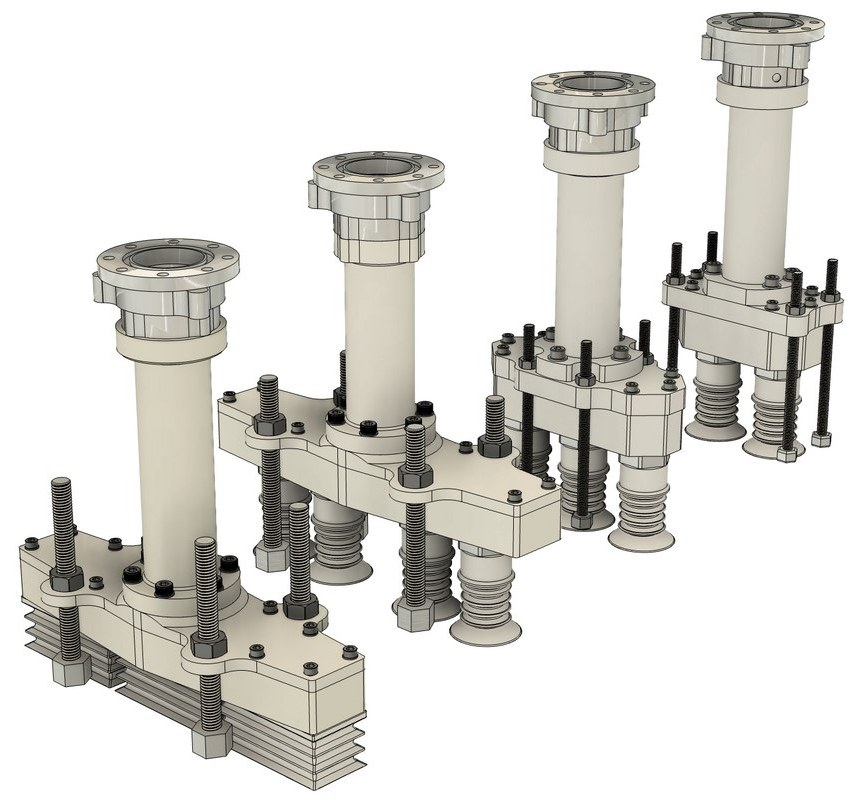

← All projects

Gripper Design for Food Packaging
Cobro Robot Technologies | 2023 – 2024 | Concept design engineer
+20% throughput, −90% cost

What?
- Developed robot grippers for ABB Delta robots, tailored to the operational and hygiene requirements of a high-speed food production company.
How?
- Designed grippers for high-speed pick-and-place operations.
- Optimised gripper mass to meet the robot payload limits.
- Used O-ring sealing for reliable, repeatable suction performance.
Results
- Integrated into the production line: 20% higher packaging throughput.
- 90% cost reduction by replacing standard components with custom suction cups.